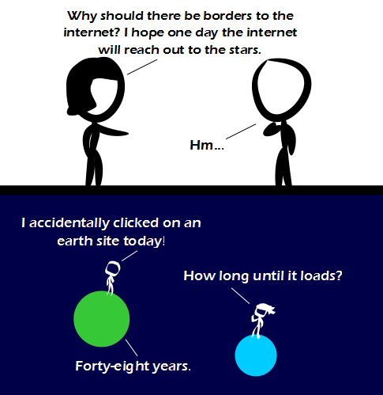

Comic JK 858
When I Feel Like It
⇤
<
?
>
⇥

⇤
<
?
>
⇥
Forum
.
RSS
.
Digg
.
Facebook
.
Reddit
.
Twitter
.
Stumbleupon
Enter your thoughts on number 32arctan(0.2)-8arctan(1/239) here. Please, no spamming, trolling, or phreaking. >The number evaluates to 6.2832... www.wolframalpha.com/input/?i=32arctan%280.2%29-8arctan%281%2F239%29 >>also known as tau (2pi) >>>oh... didn't even notice. I thought he meant to replace 858 Fun Fact: "Ansibles" is an anagram of "Lesbians"... Chatting could be fun this way... Wouldn't it be possible to design a system that keeps cached copies of the web pages available? It'd still be 48 years out of date but it would at least load quickly. >Check image alt text >Check en.wikipedia.org/wiki/Interplanetary_internet >Mirroring. You are still going to miss out on a lot of ebay auctions. The postage would be a killer, though! That are either small planets or big people! > en.wikipedia.org/wiki/The_Little_Prince How long of a delay is there in their conversation? > How can they hear each other in space? >> I'm assuming the lines symbolize radio antennae. >> or because George Lucas scripted it so ? Your mother uses sufficiently advanced caching to decrease the load time of my dick. htp://www.yourother.com/ <-- Try to remove "POOTIS", swankers. > I'm not sure what you're getting at. > wut??? >>Posting a comment box that contains a web address apparently results in a blank page. So I tried to trick people into doing that by posting a web address with something in the middle and telling people to remove that. I chose "POOTIS" as a reference to a certain Youtube fad (REMOVE POOTIS) and yourfoofie.com as a reference to your foofie. Have a good day sir. >>>how dare you tell people to have a good day... I will have the sort of day I choose to have... no more and no less...